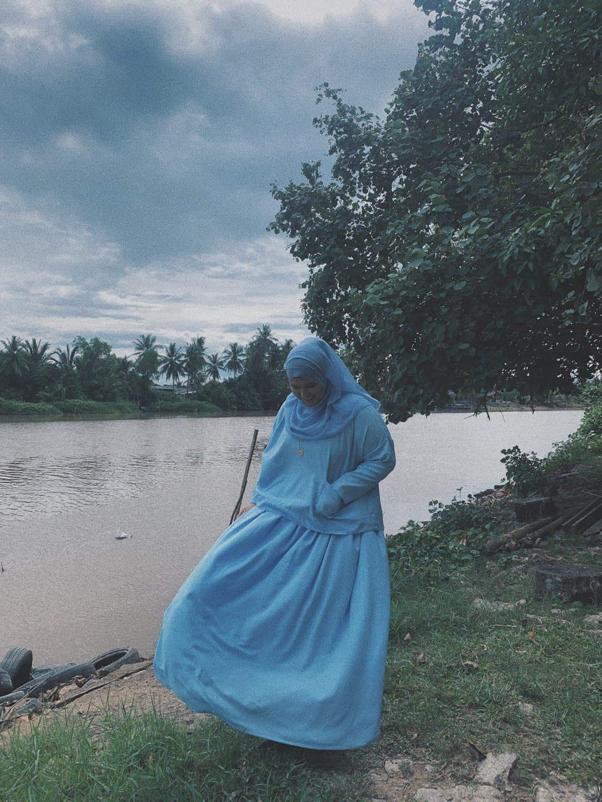

| Name | Nur Syakilah Binti Bakhtiar |
|---|---|
| Age | 22 |
| Birthday Date | 15 January 1999 |
| Address | Lot 104 Kg Panchor Kemumin, 16010 Kota Bharu Kelantan |
ABOUT ME

Here is a short video of talent that i have in palying Kalimba.
SOCIAL MEDIA

FRIENDS